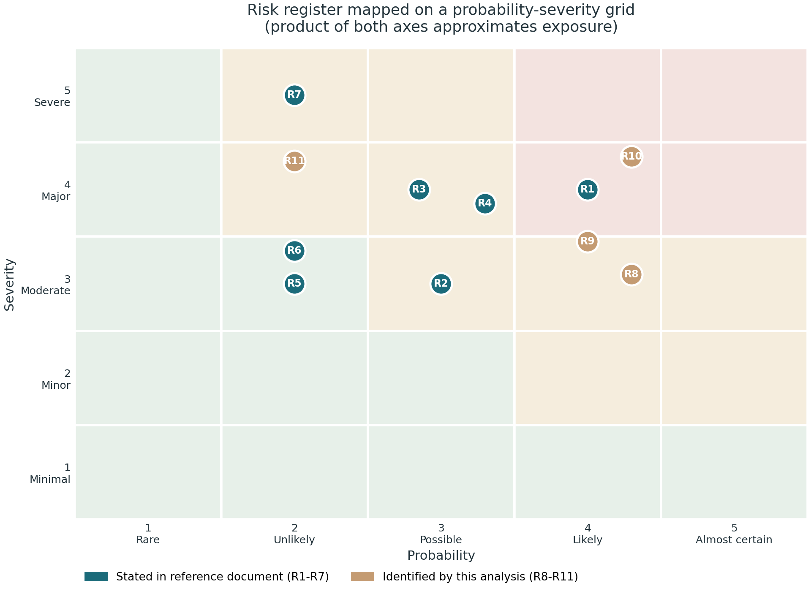

Risk register — 11 risks; four identified by this analysis

Ranked by exposure (P × S)
R10
Benchmark produced too late4.0 × 4.35
start scenario production month 2; evaluate on the first 50 (NEW)
R1
Scope explosion across 10 contributions4.0 × 4.0
freeze MVP and RQ set; enforce the descope ladder (doc)
R8
Annotation quality, no IAA protocol4.3 × 3.1
written guidelines, double annotation on a sample, report kappa (NEW)
R9
Evaluator recruitment fails in month 64.0 × 3.0
book evaluators in month 2; pay or course credit (NEW)
R7
Hallucinated requirements2.0 × 5.0
evidence-first design, validation rules, human approval (doc)
Legend:
teal = stated in the reference document (R1–R7);
tan = identified by this analysis (R8–R11).
Also watch R11 ethics/privacy (2.0 × 4.3): request Track C permissions in week 1; Track A stands alone.